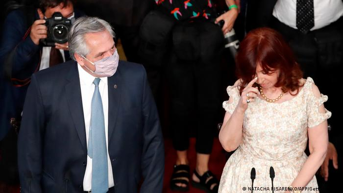

Argentina: ¿habrá malos resultados para el oficialismo en elecciones intermedias?
Este domingo es la oportunidad que el pueblo estaba esperando para expresar su descontento por el gobierno de Alberto Fernandez. Según las elecciones primarias de setiembre último no se espera sorpresas, así lo informa el portal dw.com:

Elecciones intermedias en Argentina
Último tramo de la cuenta regresiva de cara a las elecciones. En Argentina, este domingo se renueva la mitad de la Cámara de Diputados y un tercio del Senado de la Nación.
No se esperan grandes sorpresas tras las elecciones primarias de las PASO de setiembre pasado, que parecen haber iniciado la tendencia.
"Habría una replicación del "voto castigo al oficialismo del 12 de setiembre”, evalúa el sociólogo Ricardo Rouvier en diálogo con DW desde Buenos Aires, al tiempo que prevé un eventual "impacto en el oficialismo”, cuyas consecuencias de "deflagración” en la coalición de gobierno (Frente de todos) no se atreve a pronosticar.
Y asimismo: "En la coalición opositora (Juntos por el Cambio) las recientes elecciones de las PASO han ampliado la expectativa de volver al gobierno en 2023”, analiza Rouvier.
"El descontento con el gobierno tiene actualmente su fuente principal en la crítica situación económica”, sostiene, por su parte, Claudia Zilla, politóloga dedicada a temas latinoamericanos del Instituto Alemán para la Política y Seguridad Internacionales de la Fundación Ciencia y Política.
"La pobreza y la desigualdad están creciendo. La inflación actúa como un pesadísimo impuesto regresivo que afecta más fuertemente a los que menos tienen. Los precios de los alimentos suben constantemente, igual que las tarifas de los servicios y los alquileres. Pero la actualización de los sueldos no acompaña ese ritmo -si es que se tiene la suerte de tener un trabajo-, y quien puede ahorrar algo, lo hace en dólares, y los sectores más acomodados retiran capital del país”, describe el panorama Zilla desde Berlín, consultada por este medio.
Perú: crisis política por ascensos en FFAA
El presidente Pedro Castillo sigue sin romper su silencio después de los primeros 100 día de su gobierno, a pesar de haber ocurrido un nuevo escándalo de tráfico de influencias en los ascensos de las FFAA que mantiene en tela de juicio su capacidad moral para gobernar. Sin embargo la oposición aún no logra reunir los votos necesarios para la vacancia presidencial. Así lo reporta el portal infobae.com:
Esta semana inició con una nueva crisis para el jefe de Estado. Luego que el ex comandante del Ejército, José Vizcarra Álvarez, denunciara que el secretario presidencial, Bruno Pacheco Castillo, y el ministro de Defensa, Walter Ayala, habrían interferido en el ascenso de dos coroneles que serían afines al gobierno.
Al negarse a realizar dichos ascensos, José Vizcarra fue pasado al retiro, pese haber estado solo tres meses en el puesto. Según explicó, no podía aceptar los cambios por razones meritocráticas.
“Solamente me queda pensar que (mi pase a retiro) se debe a una razón recientemente presentada y que es el proceso de ascenso y las invitaciones al retiro que son parte de las actividades que se realizan en esta parte del año. (…) Yo sí recibí algunos pedidos, que me hicieron conocer antes del proceso a través del secretario Bruno Pacheco y el ministro de Defensa y los mensajes a través del Edecán del ministro de Defensa. Eran varios los recomendados y en diversos grados”, declaró José Vizcarra la mañana del lunes 8 de noviembre una radio local.